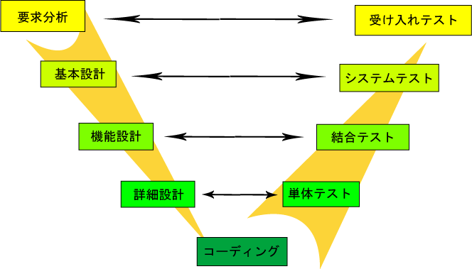

テストへの道
ソフトウェア開発全体の中で、ソフトウェアのテストというものはとても大きな割合を占めており、非常に重要な工程です。なぜテストが必要なのか？
一般紙においても「IT」という単語が現れない日はないと言えるほど、今日この技術は社会に広く浸透しています。ソフトウェアテストの流れ
一般的なソフトウェアテストは下図のような流れとなります。
ソフトウェアの開発プロジェクトにおいては、「開発コストは欠陥除去コストに左右される」 といっても 過言ではなく、
それぞれのフェーズで、下記のような事を確認します。
単体テスト
| テスト工程 | 単体テスト | 結合テスト | システムテスト | 運用テスト |
|---|---|---|---|---|
| テストの実施環境 | 開発者のPC | PC環境 | テスト環境 | 本番環境 |
| テスト実施者 | 開発者 | テスト担当者 | テスト担当者 | テスト担当者 |
| テストの対象 | クラス単体・複数のクラス | サブシステム全体 | サブシステム全体 | システム全体 |
| モックの仕様 | ○ | ○ | △（一部可） | × |
| テスト方法 | JUnit | JUnit及びキャプチャ&リプライ型ツール | キャプチャ&リプライ型ツール | キャプチャ&リプライ型ツール |
| テストケースの作成 | ホワイトボックステスト ブラックボックステスト |
グレーボックステスト | ユースケース図を使った業務シナリオ | オンライン系の業務シナリオ バッチ処理 メンテナンス系の処理 等システム全体 |
| テストで検証する品質 | ・メソッド内部ロジックが仕様通りに正しく機能すること ・行網羅、分岐網羅の観点からメソッド内のコードがテストされていること ・そのクラス単体が外部に提供するAPIが、正しく機能すること ・コンポーネントのロジック単体テスト |
・サブシステム内全体でのクラス間のインターフェイスの整合性 ・サブシステム全体を通した処理の流れ |
・疑似本番環境による、サブシステム全体でのクラス間のインターフェイスの整合性 ・疑似本番環境による、サブシステム全体を通した処理の流れ |
・本番環境による、サブシステム全体でのクラス間のインターフェイスの整合性 ・本番環境による、サブシステム全体を通した処理の流れ |